Largest island in Channel Islands National Park with island's coastline having steep cliffs, large sea caves, coves, and sandy beaches.
General Information
- Hours:
-
Accessible year-round via Island Packers boats
Mainland visitor center in Ventura Harbor: generally 8:30am to 5pm daily; closed Thanksgiving and Christmas
Island access subject to weather and sea conditions - Fees:
-
No entrance fee for Channel Islands National Park
Island Packers boat fares vary by destination, season and age; check Island Packers for current rates
Camping: $15 per site per night at Scorpion Canyon and Del Norte campgrounds (reservations required) - Pet Policy:
- Pets are not allowed
- Closest cities with hotels:
-
Ventura, CA (about 20 mi, 1 hour by boat)
Oxnard, CA - Seasons:
-
Spring for wildflowers and nesting seabirds
Summer and Fall ideal for snorkeling, kayaking, and calm seas
Winter offers solitude, sunsets, and whale watching - Location:
- Santa Cruz Island
- Website:
- nps.gov/chis/planyourvisit/santa-cruz-island.htm
How to Get There
From Los Angeles (70 mi to Ventura Harbor): Take US-101 N to Victoria Ave in Ventura, then follow signs to Ventura Harbor Village where Island Packers ferry departs to Santa Cruz Island.
Overview
Santa Cruz Island is the largest island in California and in Channel Islands National Park, stretching about 22 miles long and covering about 96 square miles, roughly 20 miles off the coast of Ventura. It has the most varied landscape of the park’s islands, with two rugged mountain ranges, a central valley, steep sea cliffs, hundreds of sea caves, secluded coves and sandy beaches. Its highest point, Devils Peak, rises more than 2,450 feet, the tallest summit in the Channel Islands.
Santa Cruz is the most popular island in the park, and visitors come for its outstanding hiking, sea kayaking, snorkeling and camping, all within about an hour’s boat ride of the mainland. The island is home to more than 60 endemic species, including the island fox and the island scrub-jay, a bird found nowhere else in the world. It is also famous for Painted Cave, one of the largest and deepest sea caves in the world. The National Park Service owns and manages the eastern quarter of the island, while The Nature Conservancy owns and protects the western three-quarters, most of which is closed to the public except on guided trips.
Sightseeing and Exploring the Island
There are no public roads open to visitors’ vehicles on Santa Cruz, and the island is explored on foot or by kayak. Most visitors land at Scorpion Anchorage on the east end, where the historic Scorpion Ranch, with its restored ranch house and exhibits, sits in a sheltered valley a short walk from the beach. Nearby clifftop viewpoints such as Cavern Point and Potato Harbor offer spectacular views of the sea cliffs and the mainland. A second landing at Prisoners Harbor on the island’s north shore provides access to the island’s interior, the historic Prisoners Harbor ranch area and the Del Norte backcountry. Along the remote northwest coast, Painted Cave is reached only by boat or kayak on special trips.
Hiking
Santa Cruz offers the widest variety of hiking in the park. From Scorpion Anchorage, easy to moderate hikes include the Cavern Point Loop, about 2 miles with stunning coastal views and frequent whale sightings, and the hike to Potato Harbor Overlook, about 5 miles round trip. Longer and more strenuous hikes include Smugglers Cove, an 8-mile round trip across the island to a quiet cobblestone beach and historic olive grove, and the climb to Montañon Ridge for sweeping views of the island’s interior. From Prisoners Harbor, trails lead to Pelican Bay, which requires a guide, the Del Norte Backcountry Campground and the scenic China Pines area. There is little shade on most trails, so hikers should carry plenty of water.
Other Activities
Santa Cruz is the best island in the park for sea kayaking, with guided tours exploring the sea caves, arches and kelp forests along the cliffs near Scorpion Anchorage, and experienced paddlers can explore on their own. Snorkeling and diving are excellent at Scorpion Beach and the surrounding kelp forests, part of the Channel Islands National Marine Sanctuary, while swimming, picnicking and beach time are popular on calm summer days. Wildlife viewing is a highlight, including island foxes around the campground, island scrub-jays in the oak woodlands, and dolphins, sea lions and whales along the coast and during the crossing. Ranger programs are offered at Scorpion Ranch, and special boat trips visit Painted Cave.
Getting to Santa Cruz Island
Santa Cruz Island is reached by boat or plane. Island Packers, the park’s official concessionaire, runs frequent day trips and camper transportation to Scorpion Anchorage and less frequent trips to Prisoners Harbor from Ventura Harbor and Channel Islands Harbor in Oxnard, with a crossing of about one hour. Ventura Harbor is about 70 miles northwest of Los Angeles and 30 miles southeast of Santa Barbara. Landing at Scorpion Anchorage is usually at a pier, but conditions can change, and trips can be canceled due to wind or rough seas. Reservations are strongly recommended, especially on summer weekends. Private boaters may also visit, though landing on The Nature Conservancy property requires a permit.
Seasons
Santa Cruz Island is open year-round, with boat trips running throughout the year. Spring brings green hillsides, wildflowers and nesting seabirds, while summer and early fall offer the warmest water and calmest seas for kayaking, snorkeling and swimming, though fog is common in late spring and early summer, often called “May Gray” and “June Gloom.” Fall typically brings clear, sunny days and some of the best water visibility of the year. Winter can bring rain, wind and rough seas, but also fewer visitors and the gray whale migration, from about December through April.
Camping and Lodging
There is no lodging on Santa Cruz Island. The Scorpion Canyon Campground, about a half mile from the landing at Scorpion Anchorage, is the park’s most popular campground, with about 30 sites shaded by eucalyptus trees, picnic tables, food storage boxes, potable water and pit toilets. For a more remote experience, the Del Norte Backcountry Campground, a 3.5-mile hike from Prisoners Harbor, offers a few primitive sites with no water. Reservations for both are required through Recreation.gov, along with boat transportation. On the mainland, Ventura and Oxnard offer numerous hotels and beachfront resorts near the harbors, and Camarillo, Santa Barbara and the Los Angeles area are within one to two hours.
Visitor Centers
On the island, the restored ranch house at Scorpion Ranch has exhibits on the island’s ranching history, Chumash culture and natural history, and rangers and volunteers are often on hand near the landing to provide information. On the mainland, the Robert J. Lagomarsino Visitor Center at Ventura Harbor is the park’s main visitor center, with exhibits, a film, a bookstore and an observation tower, and the Outdoors Santa Barbara Visitor Center at Santa Barbara Harbor provides additional park information.
This article uses material from the Wikipedia article "Santa Cruz Island", which is released under the Creative Commons Attribution-Share-Alike License 3.0, and information from the National Park Service "Channel Islands National Park" website.
Featured Locations
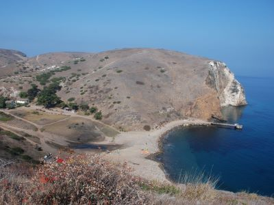
Jeff P from Berkeley, CA, USA, CC BY 2.0, via Wikimedia Commons; Image Size Adjusted
.jpg){kind=link}
Scorpion Anchorage
Harbor and beach area offering access to sea caves, hiking trails, snorkeling, and camping, serving as the main landing site for visitors to Santa Cruz Island.
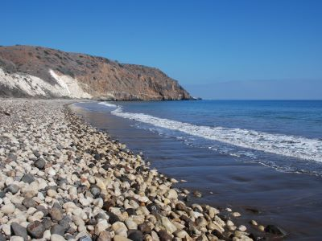
Jeff P from Berkeley, CA, USA, CC BY 2.0, via Wikimedia Commons; Image Size Adjusted
Smugglers Cove
8 miles roundtrip, 1,100 feet elevation gain, Strenuous
Secluded beach cove framed by rugged cliffs and turquoise waters, reachable by a strenuous inland hike through chaparral and coastal vistas.
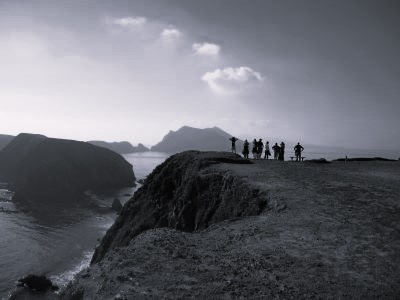
Jeff P from Berkeley, CA, USA, CC BY 2.0, via Wikimedia Commons; Image Size Adjusted
Painted Cave
Massive sea cave carved into volcanic cliffs, featuring multicolored rock walls and deep chambers accessible only by boat or kayak.
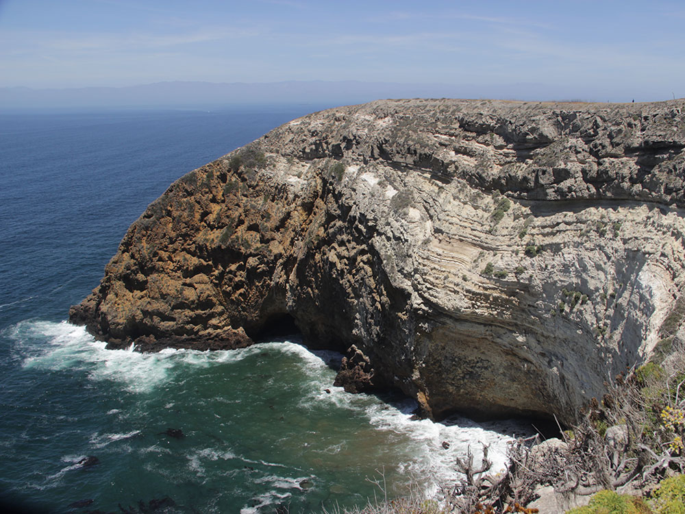
.jpg){kind=link}
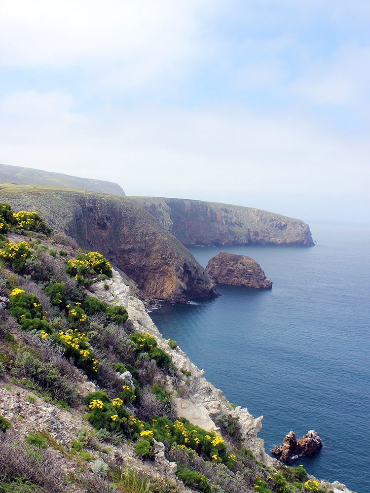

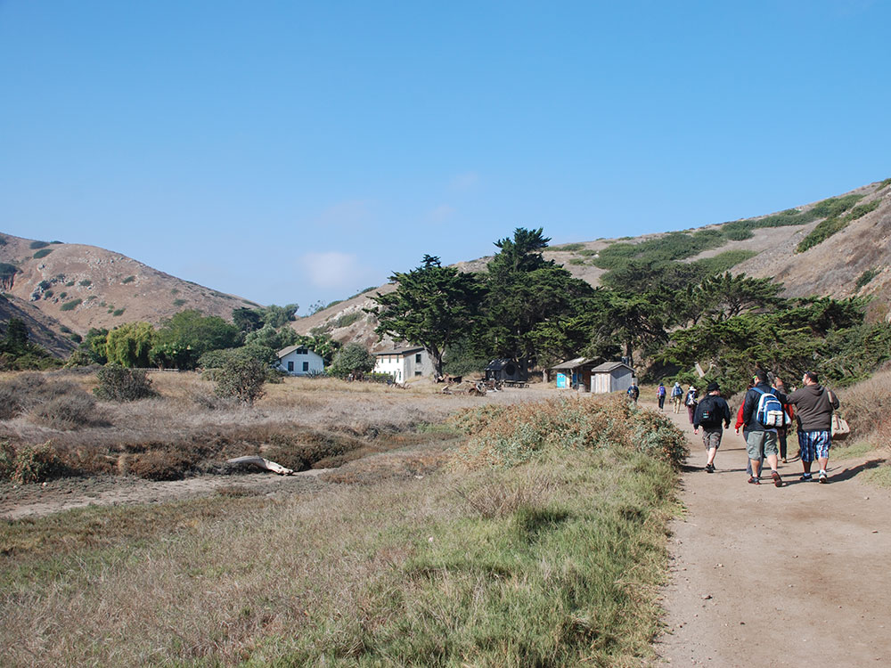

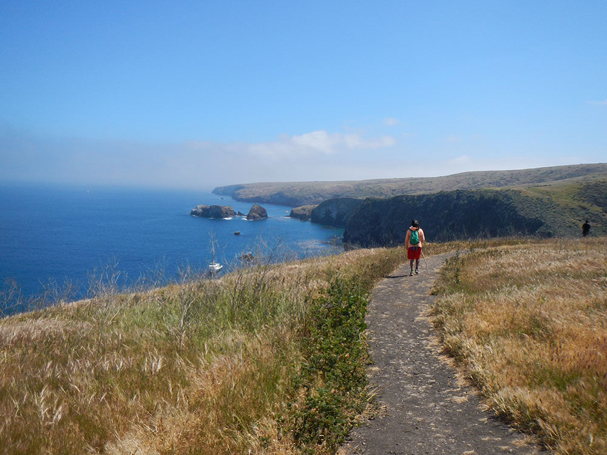
.jpg){kind=link}
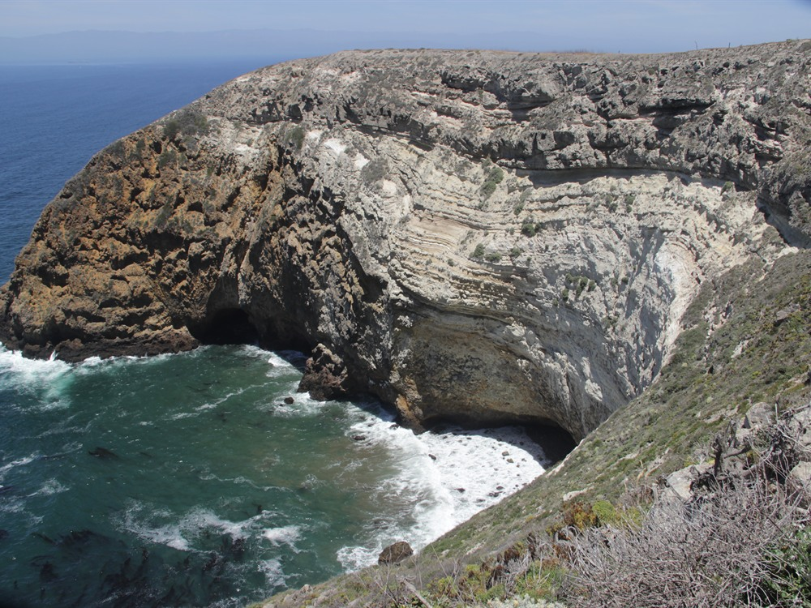
.jpg){kind=link}
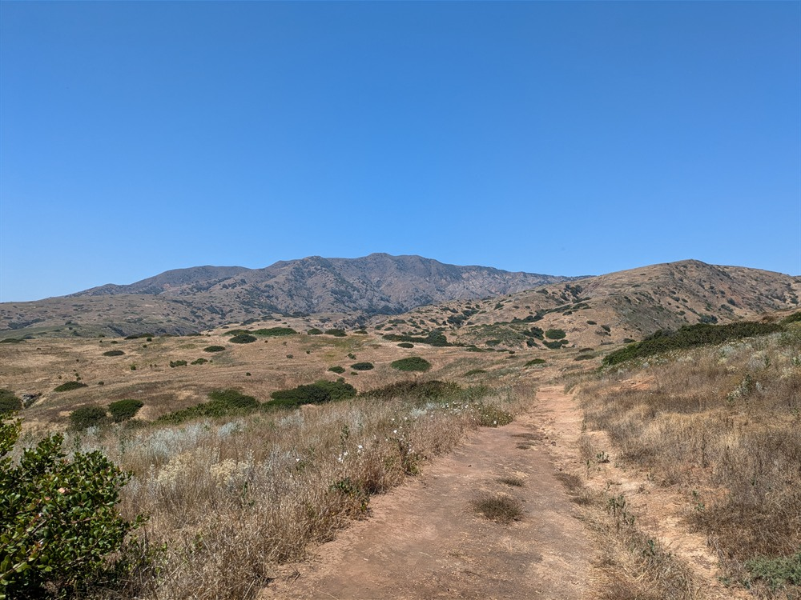

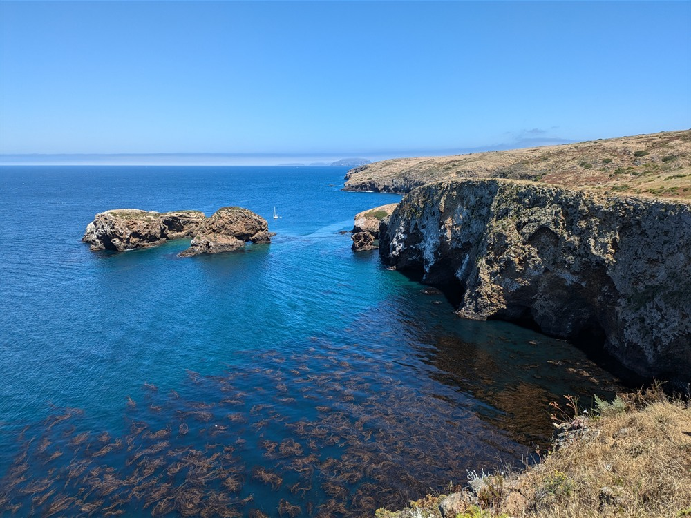

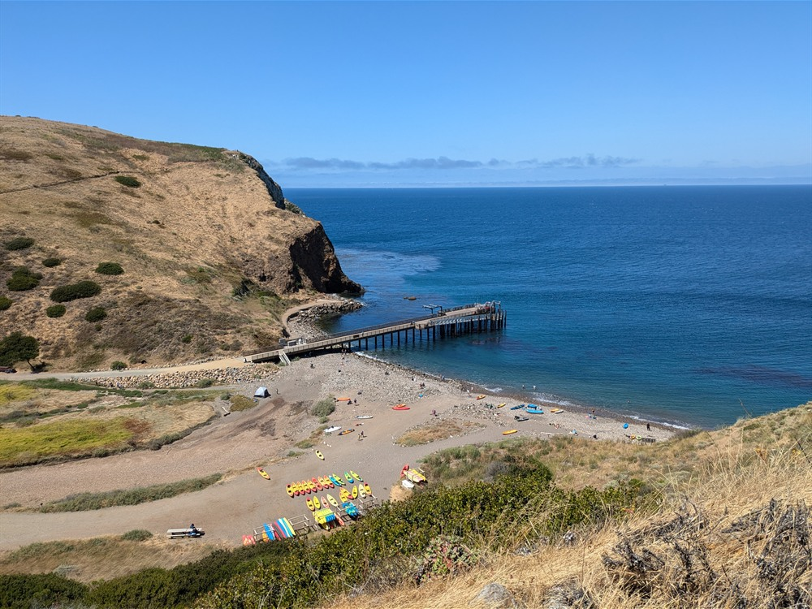

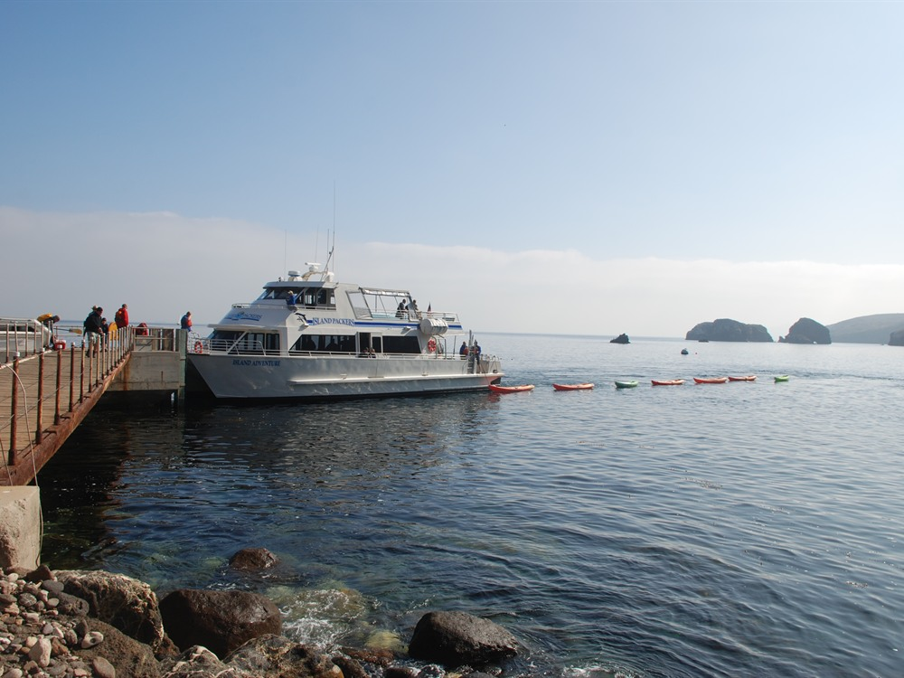

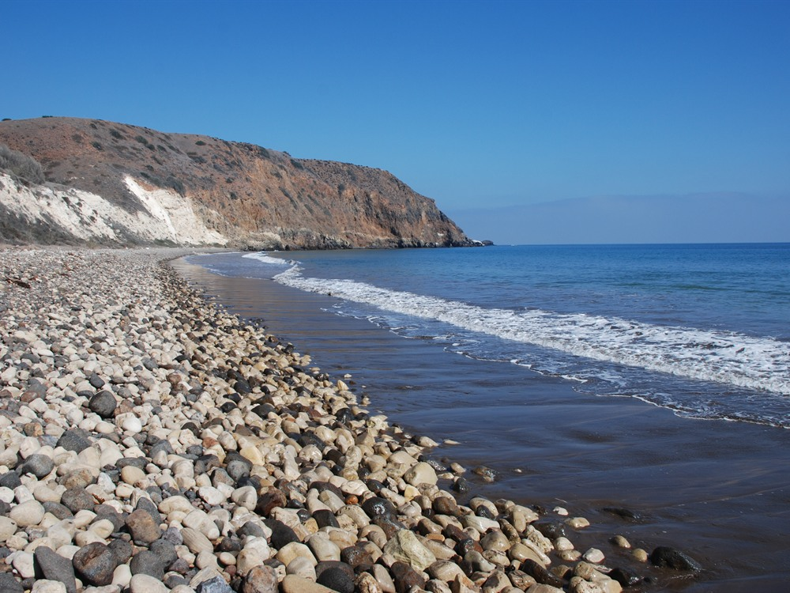

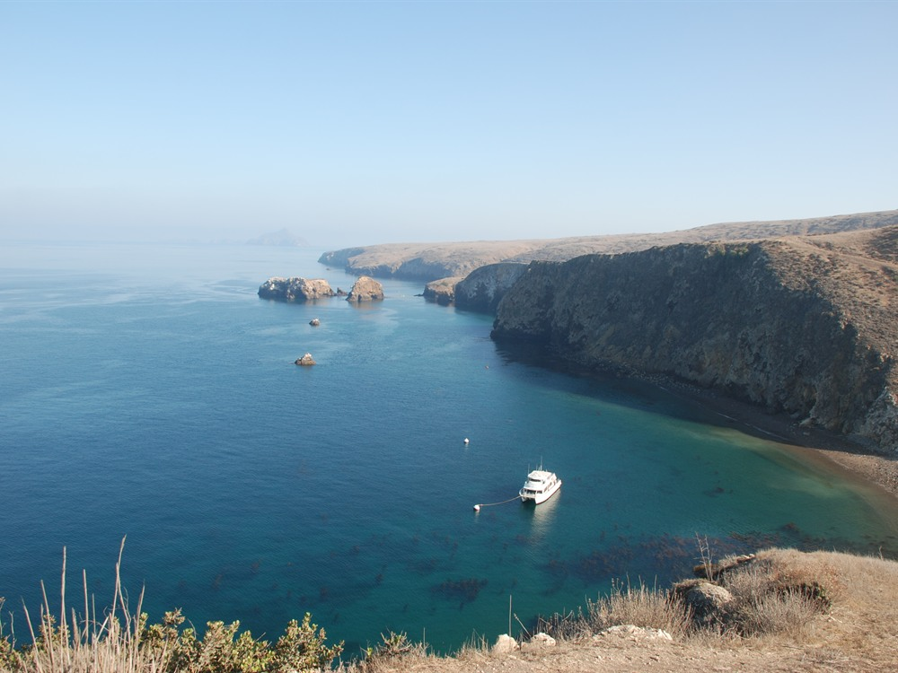